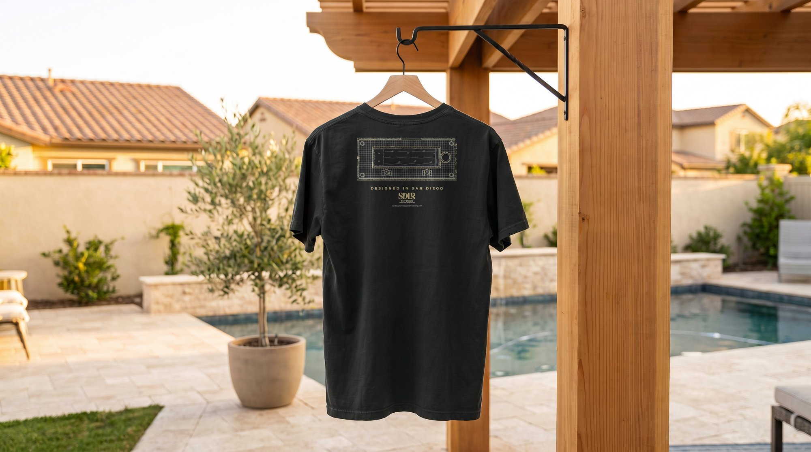
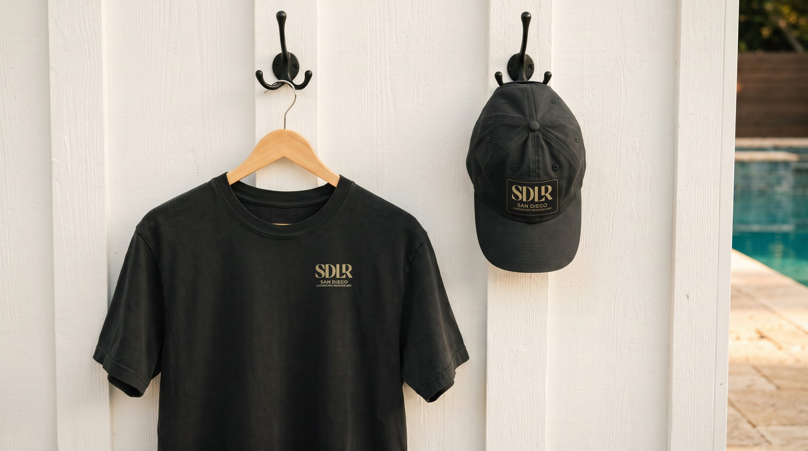
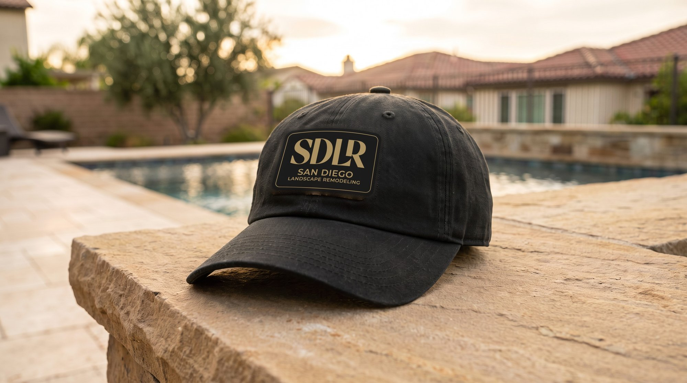

San Diego Landscape Remodeling · Uniform · Version 3 · Final
Black + Gold: the final tee and cap
Gio's pick from the five colourways. A black heavyweight tee and a black cap, with everything in SDLR gold: the full logo on the chest, the Designed in San Diego plan, logo and website on the back, and a woven gold-on-black logo patch on the cap. It's for upper management, friends and family, so there's no phone number.
FinalApproved Nov 24. Nothing has been ordered.

The back. The pen-and-ink pool-deck plan, Designed in San Diego, the SDLR logo and the website, all in gold.

The front and the cap. The full SDLR logo on the left chest, 3 in wide. The cap carries the same logo on a woven black patch.

The cap. A 3 × 2 in woven patch with a laser-cut edge: black ground, gold logo and a thin gold rule.
What gets made
Piece
Artwork
Size
Colour
Tee, front
Full SDLR logo, left chest
3 in wide
Gold ink on a black tee
Tee, back
Pool-deck plan, Designed in San Diego, SDLR logo, sandiegolandscaperemodeling.com
12 in wide (11 in for size S)
Gold ink, one colour
Cap, front
Woven patch with the full SDLR logo
3 × 2 in
Black ground, gold logo and rule, on a black cap
Before ordering
One ink. Everything on the tee is SDLR Gold #BDA572, so screen printing needs one colour on two locations.
Flat or metallic gold. The files use the flat brand gold. A metallic gold ink is an option to price with the printer.
Check the black. Garment-dyed black runs from near-black to washed charcoal. Get swatch cards for the tee and the cap so they match.
The patch is woven, not embroidered. The LANDSCAPE REMODELING line is about 2.7 mm tall at hat size. Ask the patch maker to confirm it comes out sharp on their proof.
The layered Illustrator file, mockups and README are in Drive: 02 Clients/san-diego-landscape-remodeling/assets/print-ready/apparel/2026-11-24-uniform-tee-cap-v3-FINAL-black-gold/. A dated copy is filed in assets/design/. Versions 1 and 2 are unchanged.